Filippo Gambarota
Gianmarco Altoè
University of Padova
08 February 2024
The PB is a very critical most problematic aspects of meta-analysis. Essentially the probability of publishing a paper (~and thus including into the meta-analysis) is not the same regardless of the result.
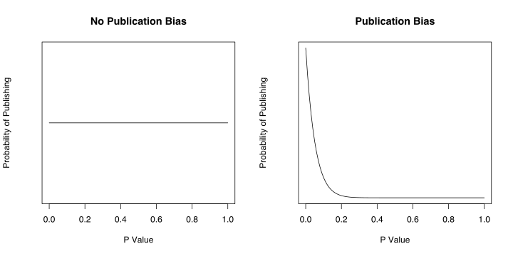We cannot (completely) solve the PB using statistical tools. The PB is a problem related to the publishing process and publishing incentives
The easiest way to understand the PB is by simulating what happen without the PB. Let’s simulate a lot of studies (under a EE model) keeping all the results without selection (the ideal world).
set.seed(2023)
k <- 1e3
n <- round(runif(k, 10, 100))
theta <- 0.3
dat <- sim_studies(k = k, es = theta, tau2 = 0, n1 = n)
dat <- summary(dat)
# compute 1 tail pvalue
dat$pval1 <- 1 - pnorm(dat$zi)
ht(dat)
#>
#> id yi vi n1 n2 sei zi pval ci.lb ci.ub pval1
#> 1 1 0.3483 0.0406 52 52 0.2015 1.7287 0.0839 -0.0466 0.7431 0.041927744
#> 2 2 0.3762 0.0605 40 40 0.2460 1.5291 0.1262 -0.1060 0.8585 0.063119366
#> 3 3 0.0634 0.0911 25 25 0.3018 0.2101 0.8336 -0.5281 0.6549 0.416800171
#> 4 4 0.4101 0.0487 46 46 0.2206 1.8588 0.0631 -0.0223 0.8426 0.031530757
#> 5 5 -0.0476 0.1160 13 13 0.3405 -0.1398 0.8888 -0.7151 0.6199 0.555581669
#> 995 995 0.3584 0.0950 24 24 0.3083 1.1625 0.2450 -0.2458 0.9625 0.122511729
#> 996 996 0.3939 0.1697 17 17 0.4120 0.9562 0.3390 -0.4135 1.2014 0.169484321
#> 997 997 0.5205 0.0486 35 35 0.2204 2.3610 0.0182 0.0884 0.9525 0.009112230
#> 998 998 0.4206 0.0815 29 29 0.2854 1.4737 0.1406 -0.1388 0.9801 0.070283435
#> 999 999 0.0625 0.0244 83 83 0.1562 0.3999 0.6893 -0.2438 0.3687 0.344631179
#> 1000 1000 0.5547 0.0416 37 37 0.2039 2.7201 0.0065 0.1550 0.9544 0.003263493Then, let’s assume that our publishing system is very strict (extreme). You can publish only if \(p \leq 0.05\) on the expected direction. Then the true population of effect sizes will be truncated. Essentially we are assuming that \(P(1|p \leq 0.05) = 1\) and \(P(1|p \leq 0.05) = 0\).
Then, let’s assume that our publishing system is very strict (extreme). You can publish only if \(p \leq 0.05\) on the expected direction. Then the true population of effect sizes will be truncated. Essentially we are assuming that \(P(1|p \leq 0.05) = 1\) and \(P(1|p \leq 0.05) = 0\).
#> fit: rma(yi = yi, vi = vi, data = dat_un, method = "EE")
#> fit_pb: rma(yi = yi, vi = vi, data = dat_pb, method = "EE")
#> fit fit_pb
#> b (intrcpt) 0.289 0.436
#> se 0.009 0.008
#> zval 32.003 51.811
#> pval 0.000 0.000
#> ci.lb 0.271 0.420
#> ci.ub 0.307 0.453
#> I2 0.955 0.000
#> tau2 0.000 0.000The situation is even worse when we simulate a null effect. This strict selection results in committing type-1 error:
#> fit0: rma(yi = yi, vi = vi, data = dat_un0, method = "EE")
#> fit_pb0: rma(yi = yi, vi = vi, data = dat_pb0, method = "EE")
#> fit0 fit_pb0
#> b (intrcpt) -0.006 0.363
#> se 0.027 0.026
#> zval -0.220 14.015
#> pval 0.826 0.000
#> ci.lb -0.059 0.312
#> ci.ub 0.047 0.414
#> I2 0.000 0.000
#> tau2 0.000 0.000Assuming to pick a very precise (\(n = 1000\)) and a very unprecise (\(n = 20\)) study, which one is more likely to have an effect size close to the true value?
The precise study has a lower \(\epsilon_i\) thus is closer to \(\theta\). This relationship create a very insightful visual representation.
What could be the shape of the plot when plotting the precision (e.g., the sample size or the inverse of the variance) as a function of the effect size?
We created a funnel plot. This is a visual tool to check the presence of asymmetry that could be caused by publication bias. If meta-analysis assumptions are respected, and there is no publication bias:
The plot assume the typical funnel shape and there are not missing spots on the at the bottom. The presence of missing spots is a potential index of publication bias.
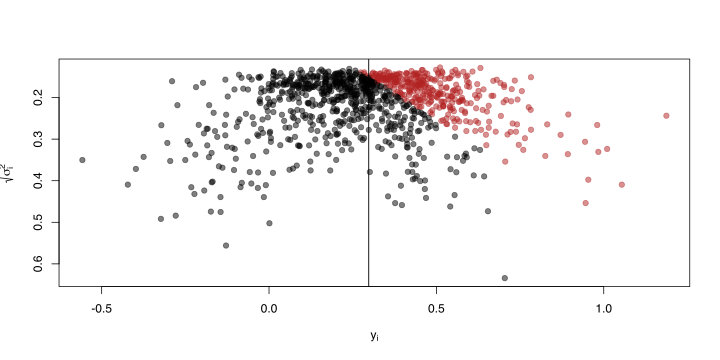The plot assume the typical funnel shape and there are not missing spots on the at the bottom. The presence of missing spots is a potential index of publication bias.
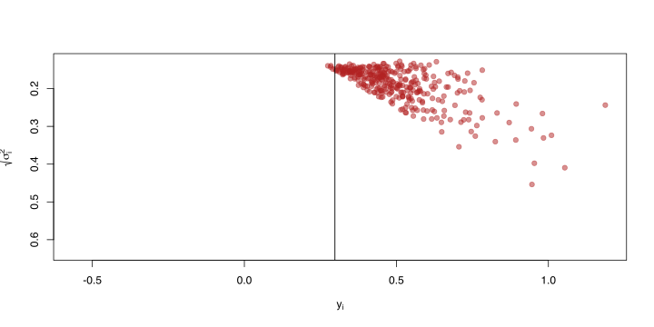The Fail-safe N (Rosenthal 1979) idea is very simple. Given a meta-analysis with a significant result (i.e., \(p \leq \alpha\)). How many null studies (i.e., \(\hat \theta = 0\)) do I need to obtain \(p > \alpha\)?
metafor::fsn(yi, vi, data = dat)
#>
#> Fail-safe N Calculation Using the Rosenthal Approach
#>
#> Observed Significance Level: <.0001
#> Target Significance Level: 0.05
#>
#> Fail-safe N: 832741There are several criticism to the Fail-safe N procedure:
A basic method to test the funnel plot asymmetry is using an the Egger regression test. Basically we calculate the relationship between \(y_i\) and \(\sqrt{\sigma^2_i}\). In the absence of asimmetry, the line slope should be not different from 0.
We can use the metafor::regtest() function:
egger <- regtest(fit)
egger
#>
#> Regression Test for Funnel Plot Asymmetry
#>
#> Model: fixed-effects meta-regression model
#> Predictor: standard error
#>
#> Test for Funnel Plot Asymmetry: z = -0.3621, p = 0.7173
#> Limit Estimate (as sei -> 0): b = 0.3061 (CI: 0.2601, 0.3520)This is a standard (meta) regression thus the number of studies, the precision of each study and heterogeneity influence the reliability (power, type-1 error rate, etc.) of the procedure.
The Trim and Fill method (Duval and Tweedie 2000) is used to impute the hypothetical missing studies according to the funnel plot and recomputing the meta-analysis effect. Shi and Lin (Shi and Lin 2019) provide an updated overview of the method with some criticisms.
Now we can use the metafor::trimfill() function:
#>
#> Estimated number of missing studies on the left side: 15 (SE = 5.4670)
#>
#> Random-Effects Model (k = 84; tau^2 estimator: REML)
#>
#> tau^2 (estimated amount of total heterogeneity): 0.0562 (SE = 0.0146)
#> tau (square root of estimated tau^2 value): 0.2371
#> I^2 (total heterogeneity / total variability): 61.61%
#> H^2 (total variability / sampling variability): 2.60
#>
#> Test for Heterogeneity:
#> Q(df = 83) = 210.3501, p-val < .0001
#>
#> Model Results:
#>
#> estimate se zval pval ci.lb ci.ub
#> 0.5934 0.0339 17.5084 <.0001 0.5270 0.6598 ***
#>
#> ---
#> Signif. codes: 0 '***' 0.001 '**' 0.01 '*' 0.05 '.' 0.1 ' ' 1The trim-and-fill estimates that 15 are missing. The new effect size after including the studies is reduced and closer to the simulated value (but in this case still significant).
We can also visualize the funnel plot highligting the points that are included by the method.
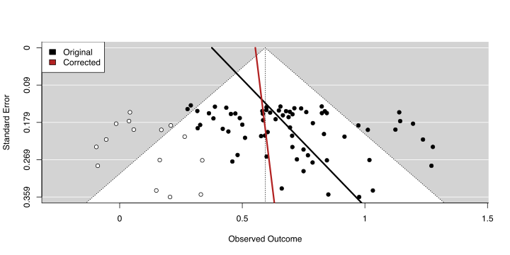This funnel plot show an evident asymmetry on the left side. Is there evidence of publication bias? What do you think?
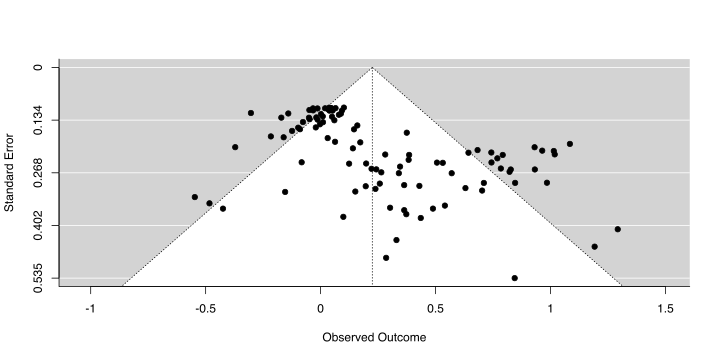The data are of course simulated and this is the code. What do you think now?
In fact, these are two unbiased population of effect sizes. Extra source of heterogeneity could create asymmetry not related to PB.
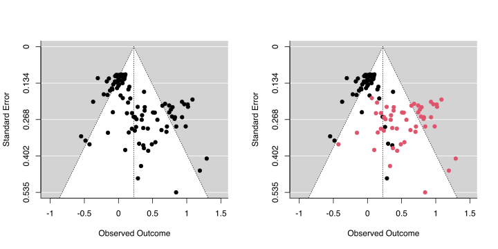Also the methods to detect/correct for PB are committing a false alarm:
regtest(fit)
#>
#> Regression Test for Funnel Plot Asymmetry
#>
#> Model: mixed-effects meta-regression model
#> Predictor: standard error
#>
#> Test for Funnel Plot Asymmetry: z = 6.2569, p < .0001
#> Limit Estimate (as sei -> 0): b = -0.2067 (CI: -0.3460, -0.0675)Also the methods to detect/correct for PB are committing a false alarm:
trimfill(fit)
#>
#> Estimated number of missing studies on the left side: 32 (SE = 6.3553)
#>
#> Random-Effects Model (k = 132; tau^2 estimator: REML)
#>
#> tau^2 (estimated amount of total heterogeneity): 0.2183 (SE = 0.0337)
#> tau (square root of estimated tau^2 value): 0.4672
#> I^2 (total heterogeneity / total variability): 86.77%
#> H^2 (total variability / sampling variability): 7.56
#>
#> Test for Heterogeneity:
#> Q(df = 131) = 639.7238, p-val < .0001
#>
#> Model Results:
#>
#> estimate se zval pval ci.lb ci.ub
#> 0.0281 0.0457 0.6142 0.5391 -0.0615 0.1177
#>
#> ---
#> Signif. codes: 0 '***' 0.001 '**' 0.01 '*' 0.05 '.' 0.1 ' ' 1The regtest can be applied also with moderators. The idea should be to take into account the moderators effects and then check for asymmetry.
fitm <- rma(yi, vi, mods = ~x, data = dat)
regtest(fitm)
#>
#> Regression Test for Funnel Plot Asymmetry
#>
#> Model: mixed-effects meta-regression model
#> Predictor: standard error
#>
#> Test for Funnel Plot Asymmetry: z = -1.0277, p = 0.3041In fact, the funnel plot on the raw dataset and on residuals looks quite different because the asymmetry was caused by the moderator.
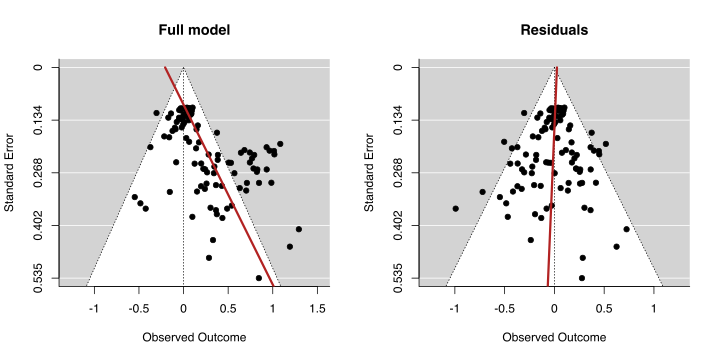SM are more than a tool for correcting for the PB. SM are formal models of PB that can help us understanding and simulating the PB.
The SM are composed by two parts:
sim_studies() function.Selection models can be based on the p-value (e.g., p-curve or p-uniform) and/or the effect size and variance (Copas model). We will see only models based on the p-value.
Formally, the random-effect meta-analysis probability density function (PDF) can be written as (e.g., Citkowicz and Vevea 2017):
\[ f\left(y_i \mid \beta, \tau^2 ; \sigma_i^2\right)=\frac{\phi\left(\frac{y_i-\Delta_i}{\sqrt{\sigma_i^2+\tau^2}}\right)}{\int_{-\infty}^{\infty} \phi\left(\frac{Y_i-\Delta_i}{\sqrt{\sigma_i^2+\tau^2}}\right) d y_i} \]
Without going into details, this is the PDF without any selection process (i.e., the effect sizes model).
If we have a function linking the p-value with the probability of publishing (a weight function) \(w(p_i)\) we can include it in the previous PDF, creating a weighted PDF.
\[ f\left(y_i \mid \beta, \tau^2 ; \sigma_i^2\right)=\frac{\mathrm{w}\left(p_i\right) \phi\left(\frac{y_i-\Delta_i}{\sqrt{\sigma_i^2+\tau^2}}\right)}{\int_{-\infty}^{\infty} \mathrm{w}\left(p_i\right) \phi\left(\frac{Y_i-\Delta_i}{\sqrt{\sigma_i^2+\tau^2}}\right)d y_i} \]
Essentially, this new model take into account the selection process (the weight function) to estimate a new meta-analysis. In case of no selection (all weigths are the same) the model is the standard random-effects meta-analysis.
The weigth function is a simple function that links the p-value with the probability of publishing. The simple example at the beginning (publishing only significant p-values) is a step weigth function.
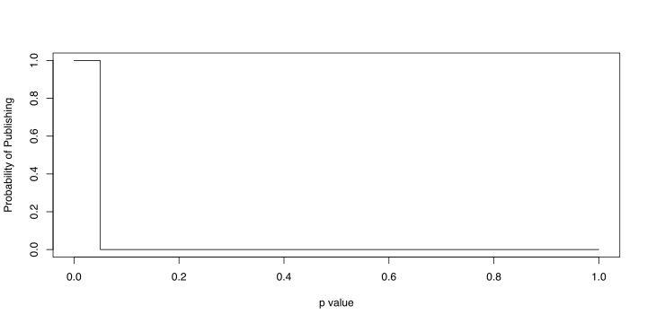We can add more steps to express a more complex selection process:
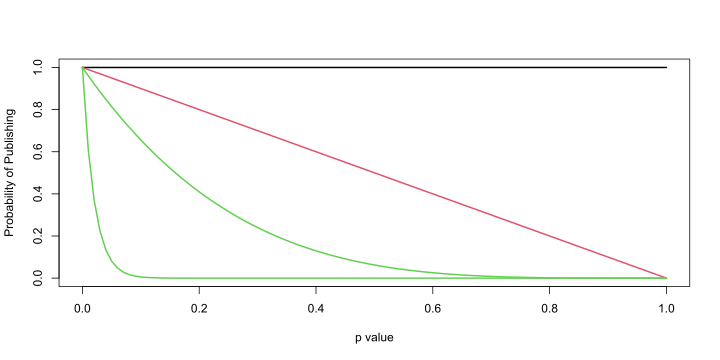Or we can draw a smooth function assuming certain parameters:
Whatever the function, the SM estimate the parameters of the function and the meta-analysis parameters taking into account the weigths.
Clearly, in the presence of no bias the two models (with and without weights) are the same while with PB the estimation is different, probably reducing the effect size.
If the SM is correct (not possible in reality), the SM estimate the true effect even in the presence of bias. This is the strenght and elegance of the SM.
There are several weight functions:
For an overview see the metafor documentation https://wviechtb.github.io/metafor/reference/selmodel.html
The step model approximate the selection process with thresholds \(\alpha\) and the associated weight \(w(p_i)\). For example:
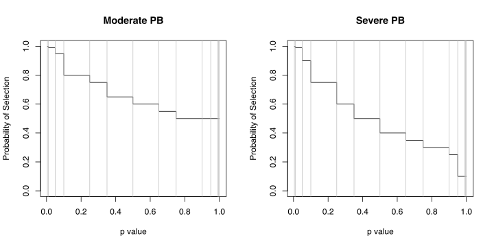The Negative-Exponential model is very simple and intuitive. The weight function is \(e^{-\delta p_i}\) thus the single parameter \(\delta\) is the amount of bias. When \(\delta = 0\) there is no bias.
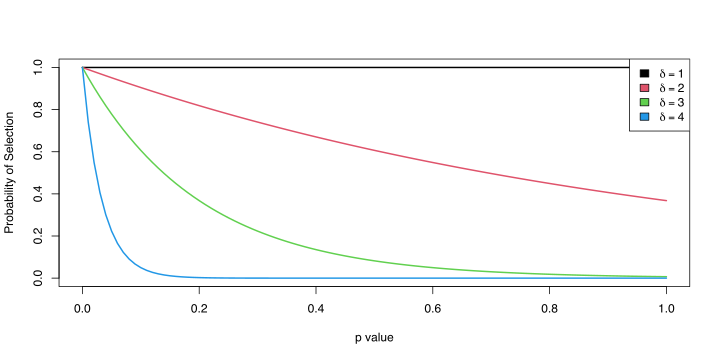The strategy to simulate biased data is to sample from the sim_studies() function but to keep the studies using a probabilistic sampling based on the weight function.
set.seed(2024)
k <- 500 # high number to check the results
es <- 0 # H0 true
tau2 <- 0.1
delta <- 5
dat <- vector(mode = "list", k)
i <- 1
while(i <= k){
# generate data
n <- runif(1, 10, 100)
d <- summary(sim_studies(1, es, tau2, n))
# get one-tail p-value
pi <- 1 - pnorm(d$zi)
# get wi
wpi <- wnegexp(pi, delta)
keep <- rbinom(1, 1, wpi) == 1
if(keep){
dat[[i]] <- d
i <- i + 1
}
}
dat <- do.call(rbind, dat)
fit <- rma(yi, vi, data = dat)Let’s see some plots:
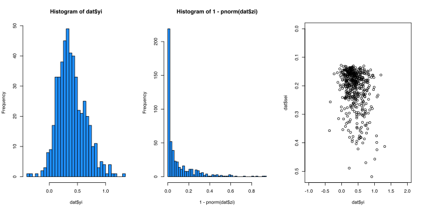Let’s see the model result:
Let’s see the Egger regression test and the trim-and-fill procedure:
regtest(fit)
#>
#> Regression Test for Funnel Plot Asymmetry
#>
#> Model: mixed-effects meta-regression model
#> Predictor: standard error
#>
#> Test for Funnel Plot Asymmetry: z = 4.4739, p < .0001
#> Limit Estimate (as sei -> 0): b = 0.2017 (CI: 0.1235, 0.2799)
trimfill(fit)
#>
#> Estimated number of missing studies on the left side: 106 (SE = 14.6182)
#>
#> Random-Effects Model (k = 606; tau^2 estimator: REML)
#>
#> tau^2 (estimated amount of total heterogeneity): 0.0474 (SE = 0.0049)
#> tau (square root of estimated tau^2 value): 0.2176
#> I^2 (total heterogeneity / total variability): 56.94%
#> H^2 (total variability / sampling variability): 2.32
#>
#> Test for Heterogeneity:
#> Q(df = 605) = 1399.3991, p-val < .0001
#>
#> Model Results:
#>
#> estimate se zval pval ci.lb ci.ub
#> 0.2927 0.0121 24.1497 <.0001 0.2689 0.3164 ***
#>
#> ---
#> Signif. codes: 0 '***' 0.001 '**' 0.01 '*' 0.05 '.' 0.1 ' ' 1The two methods are detecting the PB but not correcting it appropriately. Let’s see the SM using a negexp method:
sel <- selmodel(fit, type = "negexp", alternative = "greater")
sel
#>
#> Random-Effects Model (k = 500; tau^2 estimator: ML)
#>
#> tau^2 (estimated amount of total heterogeneity): 0.0800 (SE = 0.0118)
#> tau (square root of estimated tau^2 value): 0.2828
#>
#> Test for Heterogeneity:
#> LRT(df = 1) = 115.9867, p-val < .0001
#>
#> Model Results:
#>
#> estimate se zval pval ci.lb ci.ub
#> 0.0519 0.0381 1.3609 0.1735 -0.0228 0.1266
#>
#> Test for Selection Model Parameters:
#> LRT(df = 1) = 46.6783, p-val < .0001
#>
#> Selection Model Results:
#>
#> estimate se zval pval ci.lb ci.ub
#> 4.7526 0.3818 12.4494 <.0001 4.0044 5.5008 ***
#>
#> ---
#> Signif. codes: 0 '***' 0.001 '**' 0.01 '*' 0.05 '.' 0.1 ' ' 1We can also plot the results:
plot(sel)?selmodel for information about performing sensitivity analysis with pre-specified weight functionsmetafor::selmodel() https://wviechtb.github.io/metafor/reference/selmodel.html
::: {#refs} :::s